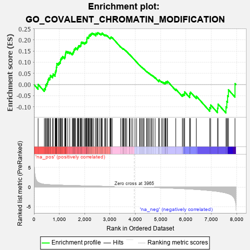
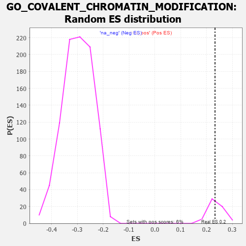

| | | Dataset | 7d |
| Phenotype | NoPhenotypeAvailable |
| Upregulated in class | na_pos |
| GeneSet | GO_COVALENT_CHROMATIN_MODIFICATION |
| Enrichment Score (ES) | 0.23307346 |
| Normalized Enrichment Score (NES) | 0.9834707 |
| Nominal p-value | 0.4827586 |
| FDR q-value | 0.759999 |
| FWER p-Value | 1.0 |
Table: GSEA Results Summary

Fig 1: Enrichment plot: GO_COVALENT_CHROMATIN_MODIFICATION
Profile of the Running ES Score & Positions of GeneSet Members on the Rank Ordered List
| PROBE | GENE SYMBOL | GENE_TITLE | RANK IN GENE LIST | RANK METRIC SCORE | RUNNING ES | CORE ENRICHMENT | | 1 | SPI1 | | | 162 | 1.182 | 0.0006 | Yes |
| 2 | EED | | | 409 | 0.690 | -0.0184 | Yes |
| 3 | HAT1 | | | 454 | 0.659 | -0.0121 | Yes |
| 4 | LEO1 | | | 463 | 0.655 | -0.0013 | Yes |
| 5 | MYOD1 | | | 504 | 0.628 | 0.0049 | Yes |
| 6 | PKN1 | | | 535 | 0.619 | 0.0122 | Yes |
| 7 | JMJD6 | | | 553 | 0.613 | 0.0211 | Yes |
| 8 | CCNB1 | | | 581 | 0.601 | 0.0285 | Yes |
| 9 | AURKC | | | 633 | 0.583 | 0.0325 | Yes |
| 10 | NOC2L | | | 647 | 0.578 | 0.0412 | Yes |
| 11 | WDR61 | | | 734 | 0.549 | 0.0401 | Yes |
| 12 | SETD3 | | | 754 | 0.544 | 0.0475 | Yes |
| 13 | PHF10 | | | 834 | 0.523 | 0.0469 | Yes |
| 14 | SGF29 | | | 840 | 0.521 | 0.0556 | Yes |
| 15 | BAZ1B | | | 861 | 0.516 | 0.0624 | Yes |
| 16 | HDAC8 | | | 881 | 0.510 | 0.0692 | Yes |
| 17 | PARG | | | 884 | 0.509 | 0.0781 | Yes |
| 18 | HDAC5 | | | 900 | 0.506 | 0.0853 | Yes |
| 19 | HCFC1 | | | 902 | 0.506 | 0.0943 | Yes |
| 20 | CTR9 | | | 964 | 0.492 | 0.0954 | Yes |
| 21 | MEN1 | | | 1003 | 0.483 | 0.0992 | Yes |
| 22 | ING3 | | | 1039 | 0.476 | 0.1033 | Yes |
| 23 | TAF9 | | | 1046 | 0.475 | 0.1111 | Yes |
| 24 | WDR70 | | | 1066 | 0.470 | 0.1172 | Yes |
| 25 | BRD8 | | | 1101 | 0.463 | 0.1212 | Yes |
| 26 | KMT2A | | | 1130 | 0.458 | 0.1259 | Yes |
| 27 | RCOR1 | | | 1211 | 0.445 | 0.1237 | Yes |
| 28 | KAT8 | | | 1231 | 0.442 | 0.1292 | Yes |
| 29 | KAT7 | | | 1240 | 0.440 | 0.1361 | Yes |
| 30 | KDM7A | | | 1248 | 0.439 | 0.1432 | Yes |
| 31 | CDC73 | | | 1265 | 0.436 | 0.1490 | Yes |
| 32 | UBR2 | | | 1334 | 0.423 | 0.1479 | Yes |
| 33 | CARM1 | | | 1413 | 0.408 | 0.1453 | Yes |
| 34 | TAF6 | | | 1512 | 0.389 | 0.1398 | Yes |
| 35 | DPF3 | | | 1541 | 0.385 | 0.1431 | Yes |
| 36 | DCAF1 | | | 1559 | 0.381 | 0.1478 | Yes |
| 37 | TADA3 | | | 1580 | 0.378 | 0.1521 | Yes |
| 38 | PAF1 | | | 1588 | 0.376 | 0.1580 | Yes |
| 39 | KDM1B | | | 1618 | 0.371 | 0.1610 | Yes |
| 40 | DDB1 | | | 1642 | 0.366 | 0.1646 | Yes |
| 41 | KDM5D | | | 1716 | 0.353 | 0.1617 | Yes |
| 42 | KMT2E | | | 1730 | 0.350 | 0.1663 | Yes |
| 43 | RCOR2 | | | 1752 | 0.345 | 0.1698 | Yes |
| 44 | VRK1 | | | 1766 | 0.343 | 0.1744 | Yes |
| 45 | FMR1 | | | 1816 | 0.334 | 0.1741 | Yes |
| 46 | RTF1 | | | 1844 | 0.329 | 0.1766 | Yes |
| 47 | OTUB1 | | | 1857 | 0.326 | 0.1810 | Yes |
| 48 | SMAD4 | | | 1860 | 0.326 | 0.1866 | Yes |
| 49 | RBBP5 | | | 1875 | 0.323 | 0.1906 | Yes |
| 50 | TASOR | | | 1931 | 0.316 | 0.1893 | Yes |
| 51 | MCRS1 | | | 1996 | 0.305 | 0.1866 | Yes |
| 52 | DMAP1 | | | 2025 | 0.301 | 0.1885 | Yes |
| 53 | IRF4 | | | 2054 | 0.298 | 0.1903 | Yes |
| 54 | KDM3A | | | 2078 | 0.294 | 0.1926 | Yes |
| 55 | SART3 | | | 2084 | 0.293 | 0.1973 | Yes |
| 56 | BRPF1 | | | 2085 | 0.293 | 0.2025 | Yes |
| 57 | TAF7 | | | 2092 | 0.292 | 0.2070 | Yes |
| 58 | PCGF3 | | | 2099 | 0.291 | 0.2115 | Yes |
| 59 | JADE1 | | | 2141 | 0.286 | 0.2114 | Yes |
| 60 | CHD1 | | | 2168 | 0.282 | 0.2132 | Yes |
| 61 | MORC2 | | | 2171 | 0.281 | 0.2180 | Yes |
| 62 | UBE2A | | | 2183 | 0.278 | 0.2216 | Yes |
| 63 | CDK2 | | | 2226 | 0.272 | 0.2211 | Yes |
| 64 | BAZ2A | | | 2227 | 0.272 | 0.2260 | Yes |
| 65 | PRDM5 | | | 2265 | 0.265 | 0.2261 | Yes |
| 66 | NSD3 | | | 2279 | 0.263 | 0.2292 | Yes |
| 67 | REST | | | 2308 | 0.259 | 0.2303 | Yes |
| 68 | SIN3A | | | 2361 | 0.251 | 0.2281 | Yes |
| 69 | MTA3 | | | 2443 | 0.237 | 0.2221 | Yes |
| 70 | KAT6A | | | 2444 | 0.237 | 0.2263 | Yes |
| 71 | KDM1A | | | 2447 | 0.237 | 0.2304 | Yes |
| 72 | KAT2B | | | 2502 | 0.226 | 0.2275 | Yes |
| 73 | HUWE1 | | | 2506 | 0.225 | 0.2312 | Yes |
| 74 | MBD3 | | | 2524 | 0.223 | 0.2331 | Yes |
| 75 | KDM4B | | | 2587 | 0.215 | 0.2290 | No |
| 76 | KAT5 | | | 2644 | 0.206 | 0.2256 | No |
| 77 | EPC1 | | | 2663 | 0.204 | 0.2270 | No |
| 78 | TAF12 | | | 2686 | 0.201 | 0.2278 | No |
| 79 | KDM6A | | | 2690 | 0.200 | 0.2310 | No |
| 80 | NSD2 | | | 2784 | 0.185 | 0.2225 | No |
| 81 | KAT6B | | | 2821 | 0.180 | 0.2211 | No |
| 82 | PHF14 | | | 2838 | 0.178 | 0.2223 | No |
| 83 | WDR5 | | | 2892 | 0.168 | 0.2185 | No |
| 84 | SMYD1 | | | 2998 | 0.150 | 0.2078 | No |
| 85 | BRD7 | | | 3018 | 0.147 | 0.2080 | No |
| 86 | BRCA2 | | | 3024 | 0.146 | 0.2100 | No |
| 87 | LEF1 | | | 3037 | 0.144 | 0.2111 | No |
| 88 | UFL1 | | | 3041 | 0.144 | 0.2133 | No |
| 89 | HDAC1 | | | 3086 | 0.138 | 0.2102 | No |
| 90 | SETD6 | | | 3420 | 0.087 | 0.1692 | No |
| 91 | CDK5 | | | 3480 | 0.080 | 0.1631 | No |
| 92 | UBR5 | | | 3518 | 0.074 | 0.1597 | No |
| 93 | HDAC3 | | | 3528 | 0.072 | 0.1599 | No |
| 94 | KMT2C | | | 3544 | 0.069 | 0.1592 | No |
| 95 | MAPK3 | | | 3589 | 0.062 | 0.1547 | No |
| 96 | WAC | | | 3618 | 0.056 | 0.1521 | No |
| 97 | SKP1 | | | 3663 | 0.049 | 0.1474 | No |
| 98 | SKI | | | 3762 | 0.032 | 0.1354 | No |
| 99 | NSD1 | | | 3779 | 0.031 | 0.1340 | No |
| 100 | KDM5C | | | 3835 | 0.022 | 0.1273 | No |
| 101 | NIPBL | | | 3900 | 0.010 | 0.1193 | No |
| 102 | EYA1 | | | 3987 | -0.006 | 0.1084 | No |
| 103 | ATG5 | | | 4051 | -0.016 | 0.1007 | No |
| 104 | GFI1 | | | 4168 | -0.037 | 0.0865 | No |
| 105 | ENY2 | | | 4195 | -0.041 | 0.0839 | No |
| 106 | PAX5 | | | 4255 | -0.051 | 0.0773 | No |
| 107 | RSF1 | | | 4267 | -0.053 | 0.0768 | No |
| 108 | CTBP1 | | | 4323 | -0.064 | 0.0710 | No |
| 109 | SETD5 | | | 4343 | -0.067 | 0.0698 | No |
| 110 | SETD2 | | | 4443 | -0.084 | 0.0586 | No |
| 111 | LRRK2 | | | 4467 | -0.087 | 0.0572 | No |
| 112 | SNW1 | | | 4514 | -0.096 | 0.0531 | No |
| 113 | CXXC1 | | | 4557 | -0.107 | 0.0497 | No |
| 114 | GATA3 | | | 4614 | -0.120 | 0.0447 | No |
| 115 | TAF10 | | | 4652 | -0.128 | 0.0423 | No |
| 116 | MIER2 | | | 4703 | -0.140 | 0.0384 | No |
| 117 | WBP2 | | | 4780 | -0.153 | 0.0314 | No |
| 118 | ATRX | | | 4929 | -0.184 | 0.0159 | No |
| 119 | SUZ12 | | | 4931 | -0.185 | 0.0191 | No |
| 120 | EP300 | | | 4941 | -0.186 | 0.0213 | No |
| 121 | TAF5 | | | 5031 | -0.204 | 0.0136 | No |
| 122 | ING4 | | | 5084 | -0.221 | 0.0109 | No |
| 123 | FLCN | | | 5140 | -0.235 | 0.0081 | No |
| 124 | HDAC6 | | | 5183 | -0.244 | 0.0072 | No |
| 125 | ASH1L | | | 5203 | -0.248 | 0.0092 | No |
| 126 | ATM | | | 5210 | -0.249 | 0.0129 | No |
| 127 | CDK1 | | | 5264 | -0.262 | 0.0109 | No |
| 128 | WDR82 | | | 5268 | -0.264 | 0.0153 | No |
| 129 | SMYD2 | | | 5598 | -0.344 | -0.0206 | No |
| 130 | RING1 | | | 5856 | -0.420 | -0.0458 | No |
| 131 | SET | | | 5895 | -0.434 | -0.0429 | No |
| 132 | PCGF2 | | | 5943 | -0.451 | -0.0407 | No |
| 133 | LDB1 | | | 5944 | -0.451 | -0.0326 | No |
| 134 | RNF8 | | | 6147 | -0.518 | -0.0491 | No |
| 135 | FEZF2 | | | 6150 | -0.519 | -0.0400 | No |
| 136 | RAG1 | | | 6176 | -0.530 | -0.0336 | No |
| 137 | UBE2N | | | 6407 | -0.621 | -0.0518 | No |
| 138 | DOT1L | | | 6939 | -0.897 | -0.1035 | No |
| 139 | DPY30 | | | 6976 | -0.923 | -0.0914 | No |
| 140 | DYDC1 | | | 7246 | -1.118 | -0.1056 | No |
| 141 | CDK9 | | | 7266 | -1.138 | -0.0875 | No |
| 142 | NEK11 | | | 7579 | -1.521 | -0.1000 | No |
| 143 | IWS1 | | | 7613 | -1.587 | -0.0756 | No |
| 144 | TAF1 | | | 7643 | -1.633 | -0.0498 | No |
| 145 | KDM8 | | | 7676 | -1.695 | -0.0233 | No |
| 146 | ARRB1 | | | 7935 | -3.377 | 0.0046 | No |
Table: GSEA details [plain text format]

Fig 2: GO_COVALENT_CHROMATIN_MODIFICATION: Random ES distribution
Gene set null distribution of ES for GO_COVALENT_CHROMATIN_MODIFICATION